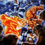

The world may not be what it seems. A revolutionary new science call Chaos is shaking things up. And what's being settled is a new order for the entire universe. Chaos uncovers patterns where only randomness had been observed: in the dripping of a faucet, the rhythn of the human heart, the formation of clouds, even the fluctuations of the New York Stock Exchange. You don't have to understand the revolutionary mathematics behind Chaos to appreciate the wonder and beauty of the software. The program creates startling and colorful images that illustrate the new science's central discoveries.

Item #1240
Price: $49.95